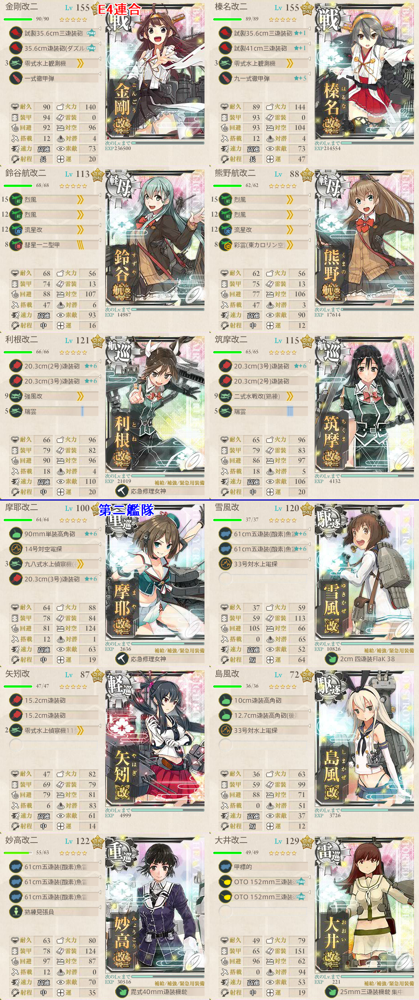

【艦これ】捷号決戦！邀撃、レイテ沖海戦(前篇) E4
2017年秋イベント E4（丙作戦）
構成
UマスS勝利
連合艦隊で到達可能
CFDGLPU
栗田艦隊
戦艦＋空母系を5隻以下（水上打撃）
基地航空隊は5マス以上飛べるものを

- 矢矧に先制対潜装備を
X, Yマス
Xマスは通過するだけ
YマスはA勝利以上
志摩艦隊で行く（下記の２通り）
- 7隻全員に志摩艦隊札をつけておく（E2に出撃する）
- 第三艦隊以外で出撃する
QTVXY
空母なし、戦艦2以下、重巡1以下、駆逐2以上
T, Xは警戒陣で乗り切る
Z4, Z6マス
連合艦隊で到達可能
Z4はA勝利、Z6はS勝利する必要がある
CFDGLPU Z1 2 3 4 6
編成はUマス同様
Z8マス
A勝利する必要がある
志摩艦隊で最短
QTVXY Z7 8
PT小鬼対策を
- 特にZ7は小鬼x6との夜戦になる
- 警戒陣＋駆逐を前方に置く等して可能な限り被害を抑えたい
編成自体はX,Yマスと同様
航空隊はXやVに置いて昼戦を安定させると良い
Z9マス
- S勝利する必要がある
- 西村艦隊でのみ到達可能
- EIMNSWY Z9
- 扶桑、山城、最上、山雲、朝雲、満潮、時雨
- ボス戦での要となる扶桑と山城は先頭に
- 道中警戒陣のため、後方に駆逐艦を集中する
- 時雨は西村艦隊特攻＋魚雷カットインでボス削り役
ボスマス（ZZ3）
西村艦隊で最短かつ、ボス特攻
EIMNSWY Z9 ZZ1 2 3
扶桑、山城、最上、山雲、朝雲、満潮、時雨
ボスが異常に堅いので、ボス支援は必須
航空隊はボスとIマス
Iマスには対潜の高い東海や九三一空を
出撃ログ（丙）
Uマス
| 回数 | 編成 | ルート | 戦果 | |
|---|---|---|---|---|
| 1 | 第一 | 金剛 榛名 鈴谷 熊野 利根 筑摩 | CFDGLPU | S勝利（ドロップなし） |
| 第二 | 摩耶 雪風 矢矧 雪風 妙高 大井 | |||
X, Yマス
| 回数 | 編成 | 33式 | ルート | 戦果 |
|---|---|---|---|---|
| 1 | 足柄 阿武隈 霞 那智 不知火 曙 潮 | 26.52 | QTV | 霞大破 |
| 2 | 足柄 阿武隈 霞 那智 不知火 曙 潮 | 20.52 | QTVXY | S勝利（五十鈴） |
Z4, Z6マス
| 回数 | 編成 | ルート | 戦果 | |
|---|---|---|---|---|
| 1 | 第一 | 金剛 榛名 鈴谷 熊野 利根 筑摩 | CFDG | 大井大破 |
| 第二 | 摩耶 雪風 矢矧 雪風 妙高 大井 | |||
| 2 | 第一 | 金剛 榛名 鈴谷 熊野 利根 筑摩 | CFDGLPU | 熊野、利根大破 |
| 第二 | 摩耶 雪風 矢矧 雪風 妙高 大井 | |||
| 3 | 第一 | 金剛 榛名 鈴谷 熊野 利根 筑摩 | CFDGLPU Z12346 | Z4 S勝利 Z6 S勝利 |
| 第二 | 摩耶 雪風 矢矧 雪風 妙高 大井 | |||
Z8マス
| 回数 | 編成 | 33式 | ルート | 戦果 |
|---|---|---|---|---|
| 1 | 足柄 阿武隈 霞 那智 不知火 曙 潮 | 20.52 | QTVXY Z7 | 足柄大破 |
| 2 | 足柄 曙 不知火 潮 霞 阿武隈 那智 | 20.52 | QTVXY Z78 | A勝利 |
Z9マス
| 回数 | 編成 | 33式 | ルート | 戦果 |
|---|---|---|---|---|
| 1 | 扶桑 山城 朝雲 山雲 満潮 時雨 最上 | 25.19 | EIMNSWY Z9 | S勝利 |
ゲージ1
| 回数 | 編成 | 33式 | ルート | 戦果 |
|---|---|---|---|---|
| 1 | 扶桑 山城 朝雲 山雲 満潮 時雨 最上 | 25.19 | EIMNSWY Z9 ZZ123 | S勝利（秋津洲） |
| 2 | 扶桑 山城 朝雲 山雲 満潮 時雨 最上 | 25.19 | EIMNSWY Z9 ZZ123 | S勝利（萩風） |
| 3 | 扶桑 山城 朝雲 山雲 満潮 時雨 最上 | 25.19 | EIMNSWY Z9 ZZ1 | 最上大破 |
| 4 | 扶桑 山城 最上 山雲 満潮 時雨 朝雲 | 25.19 | EIMNSWY Z9 ZZ123 | A勝利（朝霜） |
| 5 | 扶桑 山城 最上 山雲 満潮 時雨 朝雲 | 25.19 | EIMNSWY Z9 ZZ123 | A勝利（朝雲） T不利により削り切れず |
| 6 | 扶桑 山城 最上 山雲 満潮 時雨 朝雲 | 25.19 | EIMNSWY Z9 ZZ123 | A勝利（山雲） T不利により削り切れず |
| 7 | 扶桑 山城 最上 山雲 満潮 時雨 朝雲 | 25.19 | EIM | 時雨大破 |
| 8 | 扶桑 山城 最上 山雲 満潮 時雨 朝雲 | 25.32 | EIMNSWY Z9 ZZ123 | S勝利（天津風） ゲージ破壊 |
ゲージ2
| 回数 | 編成 | 33式 | ルート | 戦果 |
|---|---|---|---|---|
| 1 | 扶桑 山城 最上 山雲 満潮 時雨 朝雲 | 25.49 | EIMNSWY Z9 ZZ123 | S勝利（朝霜） |
| 2 | 扶桑 山城 最上 山雲 満潮 時雨 朝雲 | 25.49 | EIMNSWY Z9 ZZ123 | A勝利（時津風） |
| 3 | 扶桑 山城 最上 山雲 満潮 時雨 朝雲 | 25.49 | EIMNSWY Z9 ZZ123 | A勝利（朝雲） T不利により削り切れず |
| 4 | 扶桑 山城 最上 山雲 満潮 時雨 朝雲 | 25.58 | EIMNSWY Z9 ZZ123 | S勝利（時津風） ゲージ破壊 |
敵編成
連合艦隊
| マス | 敵航空戦力 | 敵潜水艦 | 備考 |
|---|---|---|---|
| G | なし | あり | 潜水艦x4 |
| U | あり | なし | 連合艦隊 戦艦3 軽空母1 ネ級2 + 軽巡1 ツ級1 駆逐4 |
| Z1 | あり | なし | 空襲戦 |
| Z2 | あり | なし | 空襲戦 |
| Z3 | なし | なし | 夜戦 PT小鬼x4 |
| Z4 | なし | なし | 夜戦 軽巡1 駆逐5 |
| Z6 | あり | なし | 連合艦隊 軽空母4 ツ級1 ダイソン1 + 軽巡1 ツ級1 駆逐4 |
志摩艦隊
| マス | 敵航空戦力 | 敵潜水艦 | 備考 |
|---|---|---|---|
| T | なし | あり | 夜戦 潜水艦x3～4 |
| V | あり | なし | 空襲戦 |
| X | あり | なし | 軽空母1 駆逐3 PT小鬼1 |
| Y | なし | なし | 夜戦開始 連合艦隊 重巡4 駆逐2 + 駆逐4 PT小鬼2 |
| なし | あり | ルート開示後 夜戦 潜水姫1 潜水0～1 | |
| Z7 | なし | なし | 夜戦 PT小鬼x6 |
| Z8 | なし | なし | 夜戦 連合艦隊 重巡2 ネ級2 駆逐2 + 駆逐2 PT小鬼4 |
西村艦隊
| マス | 敵航空戦力 | 敵潜水艦 | 備考 |
|---|---|---|---|
| I | なし | あり | 潜水艦x3～4 |
| M | あり | なし | 空襲戦 |
| N | あり | なし | 空襲戦 |
| S | あり | なし | 軽巡1 軽空母1 重巡1 ツ級1 駆逐2 単縦陣 |
| W | なし | なし | 夜戦 駆逐2 PT小鬼2 梯形陣 ボス出現後は遭遇なし |
| Y | なし | あり | ルート開示後 夜戦 潜水姫1 潜水0～1 |
| Z9 | なし | なし | 夜戦 連合艦隊 駆逐12 |
| なし | なし | ボス出現後 夜戦 駆逐6 | |
ボス
| マス | 敵航空戦力 | 敵潜水艦 | 備考 |
|---|---|---|---|
| ZZ1 | なし | なし | 夜戦 PT小鬼x5 |
| ZZ2 | なし | なし | 夜戦 駆逐6 |
| ZZ3 | あり | なし | ゲージ1ボス 夜戦開始 連合艦隊 海峡夜棲姫1 戦艦3 重巡2 + 駆逐4 PT小鬼2 |
| あり | なし | ゲージ1ラストダンス 夜戦開始 連合艦隊 海峡夜棲姫壊1 戦艦4 重巡1 + 駆逐4 PT小鬼2 | |
| なし | なし | ゲージ2ボス 夜戦開始 連合艦隊 防空姫 | |